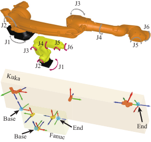
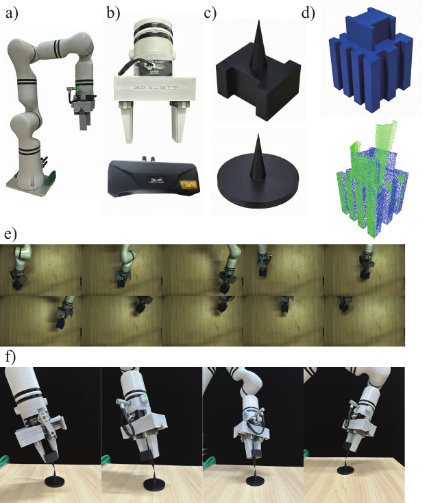
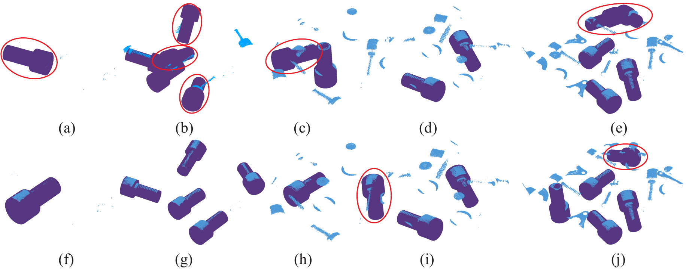
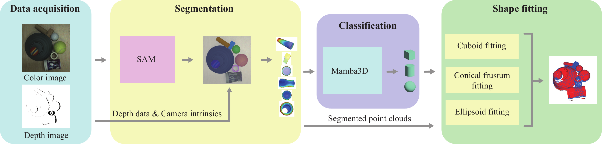
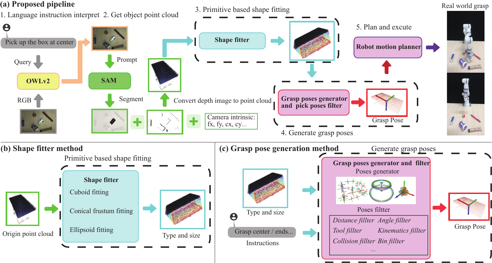
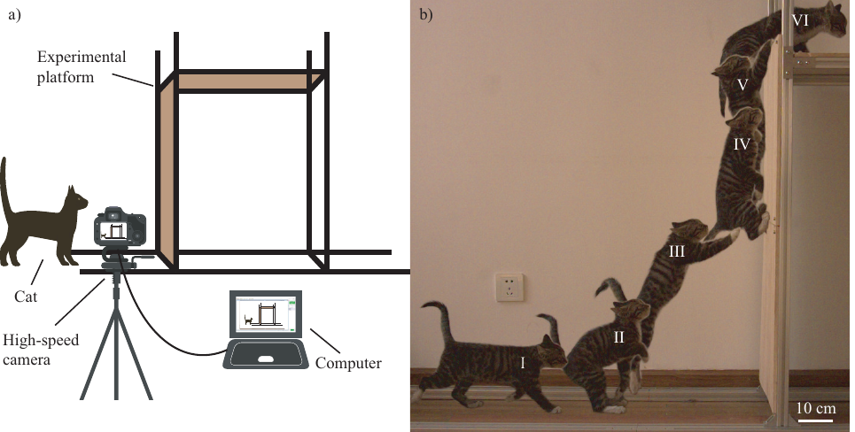

Robot Perception
机器人感知
Develops scene segmentation, point-cloud classification, pose estimation, and geometric fitting methods for cluttered grasping scenes.
面向复杂抓取场景，研究场景分割、点云分类、位姿估计与几何体拟合等感知方法。
Academic Homepage 学术主页
Ph.D. Candidate in Mechanical Engineering | Robot Perception, Planning, and Grasping
机械工程博士在读 | 机器人感知、规划与抓取
I am currently seeking suitable industry positions or postdoctoral opportunities
正在寻找企业岗位或博士后机会
I am a Ph.D. candidate in Mechanical Engineering at Beijing Institute of Technology. My research focuses on robot perception, motion planning, and grasp planning, with particular interest in integrating 3D vision, geometric reasoning, and robotic execution for real-world grasping and manipulation tasks.
目前在北京理工大学攻读机械工程博士学位，研究方向聚焦机器人感知、运动规划与抓取规划，重点关注三维视觉、几何推理与机器人任务执行在真实抓取场景中的协同应用。
01
I am a Ph.D. candidate in Mechanical Engineering at Beijing Institute of Technology. My research focuses on robot perception, motion planning, and grasp planning, especially for grasping in cluttered or unstructured scenes. I work on integrating 3D vision, geometric reasoning, kinematic analysis, and task execution into coherent robotic systems. My recent work spans inverse kinematics, hand-eye and tool calibration, point-cloud pose estimation, scene understanding through geometric primitive fitting, and language-guided grasping. In addition to geometry-driven and analytical methods, I also incorporate learning-based methods into robotic tasks and am currently exploring VLA and reinforcement learning. More broadly, I enjoy working on challenging problems and adapting quickly to new methods, tools, and research directions.
目前在北京理工大学攻读机械工程博士学位，研究方向聚焦机器人感知、运动规划与抓取规划，主要面向复杂抓取场景中的感知、建模与执行问题。研究工作围绕三维视觉、几何推理、运动学分析、手眼标定、位姿估计、场景理解以及语言引导抓取等方向展开，重点关注如何将感知、建模与执行过程组织为一套连贯的机器人算法链路。在以几何建模和解析方法为主推进研究的同时，也尝试将机器学习方法引入机器人任务，并持续关注 VLA、强化学习等具身智能方向。除研究工作本身外，也乐于钻研有挑战性的问题，同时能够较快适应新的方法、工具和任务场景。
02
Develops scene segmentation, point-cloud classification, pose estimation, and geometric fitting methods for cluttered grasping scenes.
面向复杂抓取场景，研究场景分割、点云分类、位姿估计与几何体拟合等感知方法。
Studies inverse kinematics, path planning, collision detection, and the algorithmic foundations required for robotic execution.
围绕机器人执行过程，研究逆运动学、路径规划、碰撞检测等关键算法基础。
Builds calibration methods for hand-eye relations and tool coordinates to improve perception-action alignment in robotic grasping.
研究手眼关系与工具坐标系标定方法，提升视觉信息与机器人动作之间的对齐精度。
Explores how language understanding, multimodal perception, and geometric reasoning can be combined for interpretable grasp planning.
探索语言理解、多模态感知与几何推理之间的协同机制，提升抓取规划的可解释性。
Applies learning-based methods to perception and grasping tasks, and is currently exploring VLA and reinforcement learning for embodied robotic systems.
将学习方法应用于机器人感知与抓取任务，并持续关注 VLA、强化学习等具身智能相关方向。
03

Proposes a D-H-parameter-based framework that lets robots with the same configuration share one analytical inverse kinematics solution across different manufacturers.
提出基于 D-H 参数的通用解析逆运动学框架，使同构型工业机器人能够共享同一套逆运动学求解方法。

Introduces a joint calibration model for hand-eye transformation and tool coordinates, reducing error propagation and improving grasping accuracy in simulation and real experiments.
提出手眼关系与工具坐标系联合标定模型，减少分步标定的误差传递，并在仿真与实物实验中提升抓取精度。

Presents a hyperparameter optimization framework for point-cloud pose estimation that improves both matching accuracy and usability without manual tuning for each object.
提出面向点云位姿估计算法的参数优化框架，减少针对不同物体反复人工调参的需求，并提升匹配精度与易用性。

Builds a scene understanding pipeline that segments objects, classifies point clouds, and fits cuboids, conical frustums, and ellipsoids for interpretable perception.
构建面向场景理解的流程，实现物体分割、点云分类以及长方体、圆台和椭球等基本几何体拟合，增强感知结果的可解释性。

Proposes a language-guided model-free grasping method that combines multimodal localization, primitive fitting, and task-oriented grasp selection for robust grasping in real scenes.
提出一种语言引导的无模型抓取方法，将多模态目标定位、基本几何体拟合与任务导向抓取选择结合起来，实现真实场景下的稳定抓取。

Analyzes dynamic vertical climbing in domestic cats with a three-contact-state LIP-based model and clarifies the physical conditions that enable dynamic wall climbing without static adhesion.
基于三种接触状态的线性倒立摆模型分析家猫动态垂直爬壁机理，阐明无静态附着条件下实现动态爬壁所需的关键物理条件。
04
Developed kinematics and path planning algorithms for a biomimetic four-axis manipulator, and worked on interface development and coordinated control for a cell-culture bioreactor.
参与仿生四轴机械臂正逆运动学与路径规划算法开发，并承担细胞培养生物反应器交互界面与协调控制相关工作。
Participated in polishing-path planning based on quadric surfaces, robot and force-controlled polishing head programming, on-site debugging, and project delivery. Also worked on multi-axis synchronized PLC control for an automatic screw-locking machine and waterproof housing design for a snake robot.
参与基于二次曲面的打磨路径规划、机器人与力控浮动磨头控制程序开发、现场调试与项目交付，同时参与自动锁螺丝机多轴同步控制与蛇形机器人防水外壳设计。
Maintained robot kinematics, motion planning, and collision detection algorithms, and contributed to grasp pose generation, pose-estimation parameter optimization, hand-eye calibration, and Blazor-based scene configuration tools.
参与运动学、路径规划与碰撞检测算法开发与维护，同时负责抓取位姿生成、位姿估计参数优化、手眼标定以及基于 Blazor 的场景配置与可视化模块开发。
Participates in embodied intelligence algorithm development for indoor mobile manipulation platforms and contributes grasping skills for a robotic shop-assistant scenario on the G1 robot.
参与室内移动操作平台的具身智能算法研发，并围绕 G1 机器人太空舱店员场景开发抓取技能，兼顾传统方法与学习方法。
05
06
For research collaboration, academic exchange, or engineering discussion, please feel free to reach out by email.
如需开展学术交流、项目合作或进一步了解研究工作，欢迎通过邮箱联系。
nq_eecm@163.com